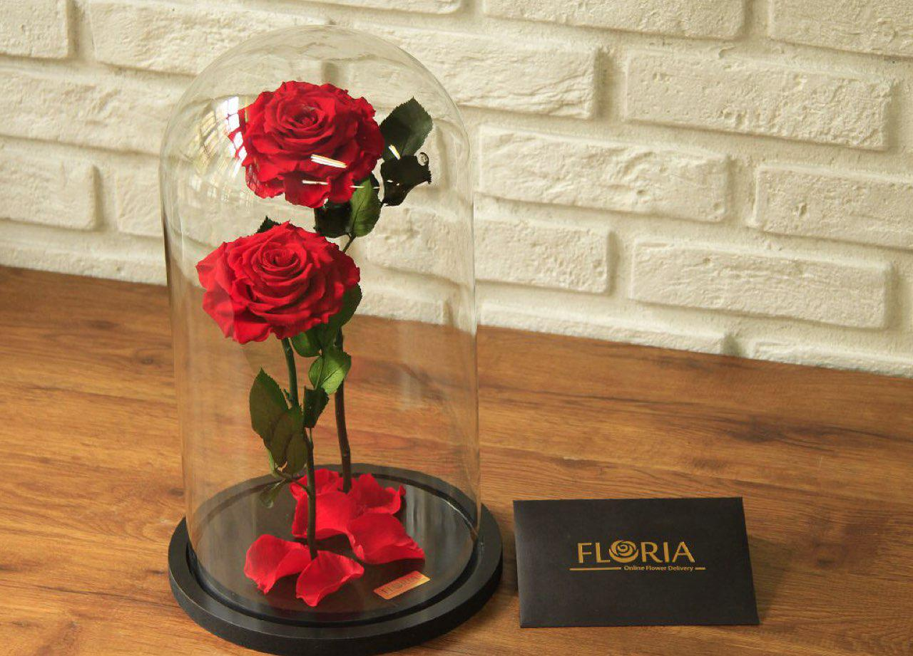

Lasting flower 🌺
Lasting flower is a completely natural flower with the same softness, elegance and beauty of Dutch roses, which has been extended by using a special process. Permanent flowers are completely different from artificial flowers. Long-lasting flower, as its name suggests, has a very high durability and is produced in different colors, different sizes and different frames.
Types of lasting roses
Palladium Long Lasting Rose
The lasting rose of palladium is a simple and beautiful flower that usually everyone is very fond of this flower and it is compatible with all tastes. Palladium's long-lasting flower is one of the attractive and special flowers that attracts the customer's attention and makes the customer buy.
A lasting rose of light
If you are also looking for a special gift, one of the best options is light roses. Noor lasting flower also has its own audience and is the best-selling product. To order this product, just refer to other pages.
A lasting rose box
A stylish flower box as a gift to someone you love. The long-lasting flower inside the box is one of the best-selling products that are often ordered by customers There are two types of roses inside the box, the first type: natural flowers and the second type: artificial flowers, which are arranged according to the customer's taste.
A lasting rose box
A stylish flower box as a gift to someone you love. The long-lasting flower inside the box is one of the best-selling products that are often ordered by customers There are two types of roses inside the box, the first type: natural flowers and the second type: artificial flowers, which are arranged according to the customer's taste.